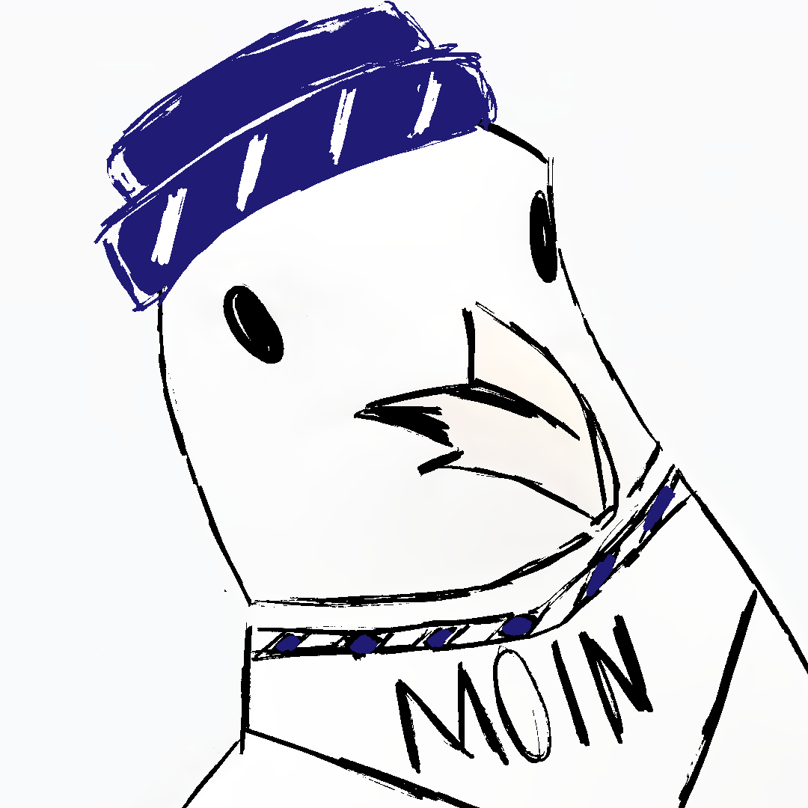
MOINORACLE
befragen
Projekte
Pack und Schnack – Tablet/Web
Gruppenprojekt · 5 Personen · Interface- u. Interaktionsdesign
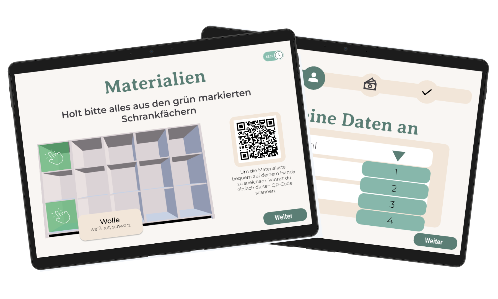
Problem:
Pack & Schnack, ein Konzeptladen mit Café und Kreativwerkstatt, brauchte ein System, mit dem Kund:innen den Kreativraum eigenständig buchen und die Workshops per Video-Anleitung durchführen können, ohne das Personal ständig um Hilfe zu bitten.
Prozess:
Über eine Online-Umfrage und Straßeninterviews vor Ort haben wir Zielgruppe und Anforderungen erhoben, daraus einen Lo-Fi-Prototyp gebaut und in drei Usability-Test-Szenarien geprüft. Aus dem Feedback entstand der Hi-Fi-Prototyp mit einheitlicher Buttonführung und klareren Icons.
Meine Rolle:
Online-Umfragebogen erstellt, Lo-Fi-Prototyp umgesetzt und beim Hi-Fi-Prototyp vor allem an der klickbaren Interaktions- und Funktionslogik gearbeitet, aufbauend auf dem Lo-Fi-Prototyp.
Learnings:
Erst im Usability-Test fiel auf, dass zwei Icons (Ideen und Extratipps) kaum unterscheidbar waren. Ein kleines Detail, welches den ganzen Ablauf verwirrend machen kann. Zudem fehlte einzelnen Elementen teilweise der Aufforderungscharakter, sodass nicht sofort klar war, dass eine Interaktion möglich ist.
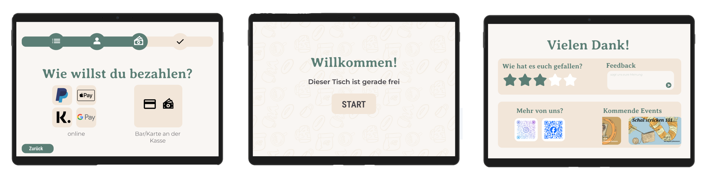
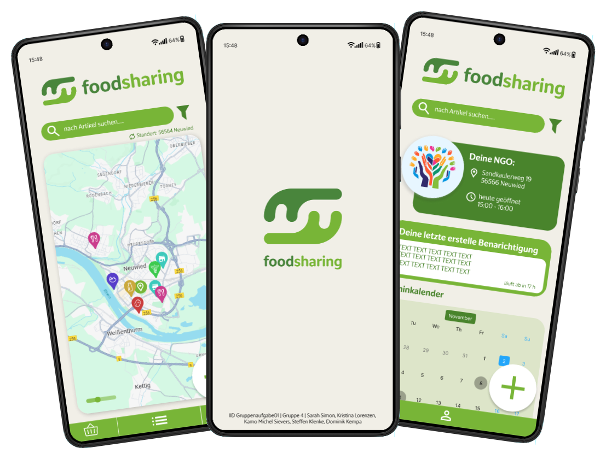
Problem:
Lebensmittel werden massenhaft weggeworfen, in Supermärkten, Restaurants und privaten Haushalten, während viele Menschen auf günstige oder kostenlose Lebensmittel angewiesen sind. Es fehlte eine niedrigschwellige App, die Angebot und Bedarf zwischen Privatpersonen, Restaurants und Organisationen wie der Tafel sichtbar macht.
Prozess:
Aus einer offenen Problemsammlung haben wir Zielgruppen und Anforderungen in einem Raster strukturiert und daraus User-Flows fürs Einstellen, Filtern und Reservieren von Produkten entwickelt. Auf dieser Basis ist ein Lo-Fi-Prototyp entstanden.
Meine Rolle:
Umsetzung mehrerer Screens des Lo-Fi-Prototyps in Figma.
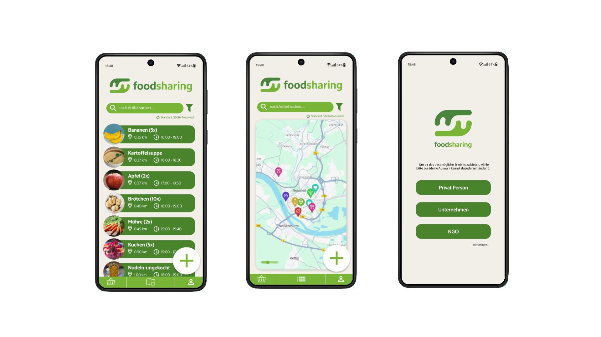
weitere Projekte
Tine Netzwerk - Mobil und Web
Gruppenprojekt · 4 Personen · Konzeption digittaler Medien
Für den Kurs Konzeption digitaler Medien haben wir ein Markenprofil für das fiktive Tierheim-Netzwerk "TiNE" entwickelt. Dazu gehörten zwei kleinere Prototypen, einer für Mobile und einer für Web. Ich habe größtenteils an der mobilen Version gearbeitet.
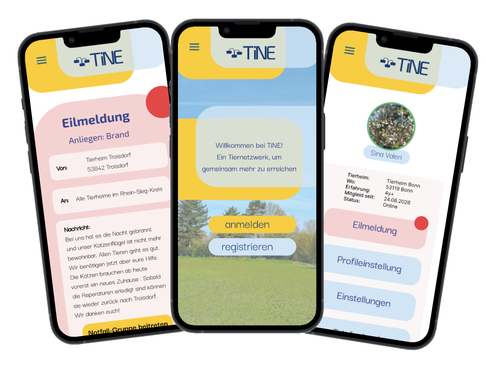
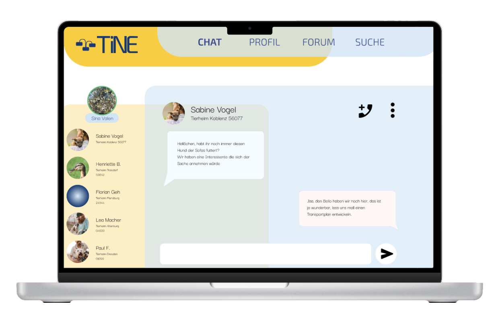
Portfolio Builder
Einzelarbeit · Frontend Design
Bevor ich im Modul Frontend Design meine eigene Website programmiert habe, hab ich sie erst als Prototyp durchdacht. Dafür hab ich einzelne Seiten im Detail in Figma entworfen.
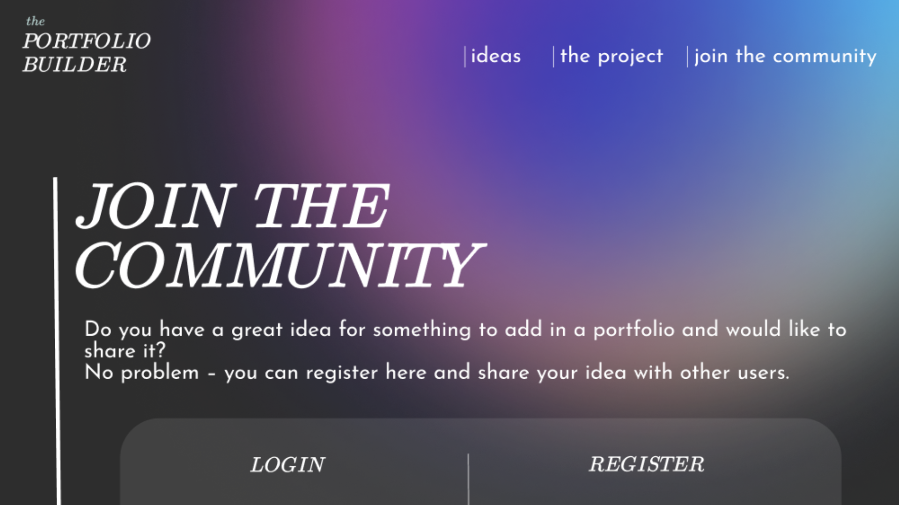
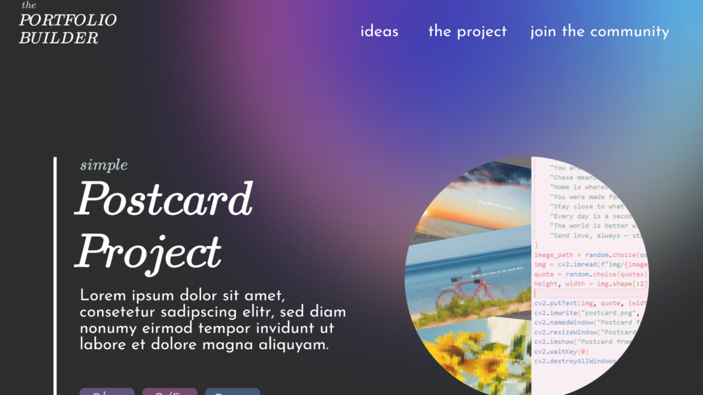
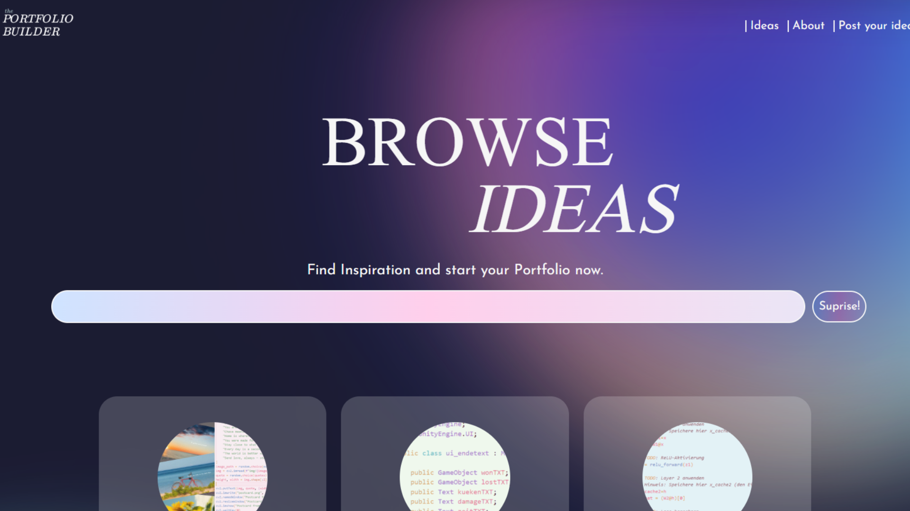
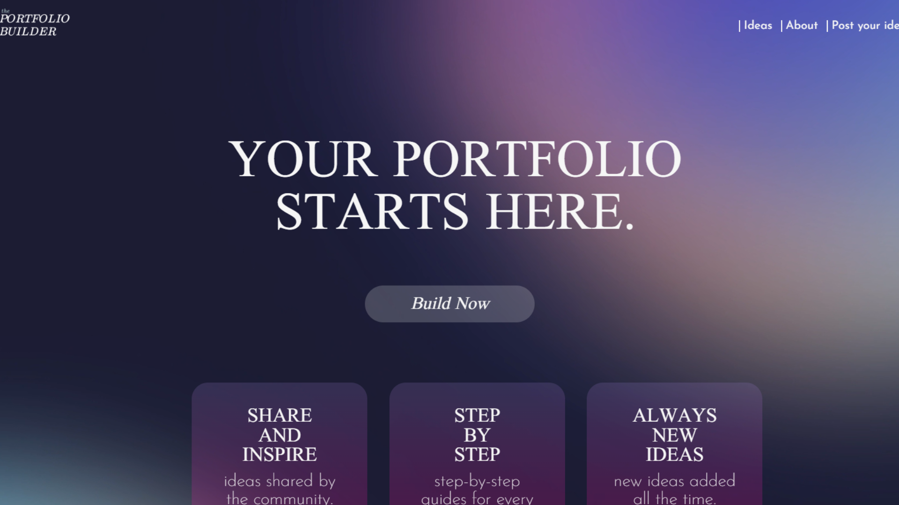
ChitChat- Chat App
Gruppenprojekt · 2 Personen · Mobile Computing
Ein grober, schneller Lo-Fi-Prototyp, der als Orientierung für die anschließende Entwicklung diente.
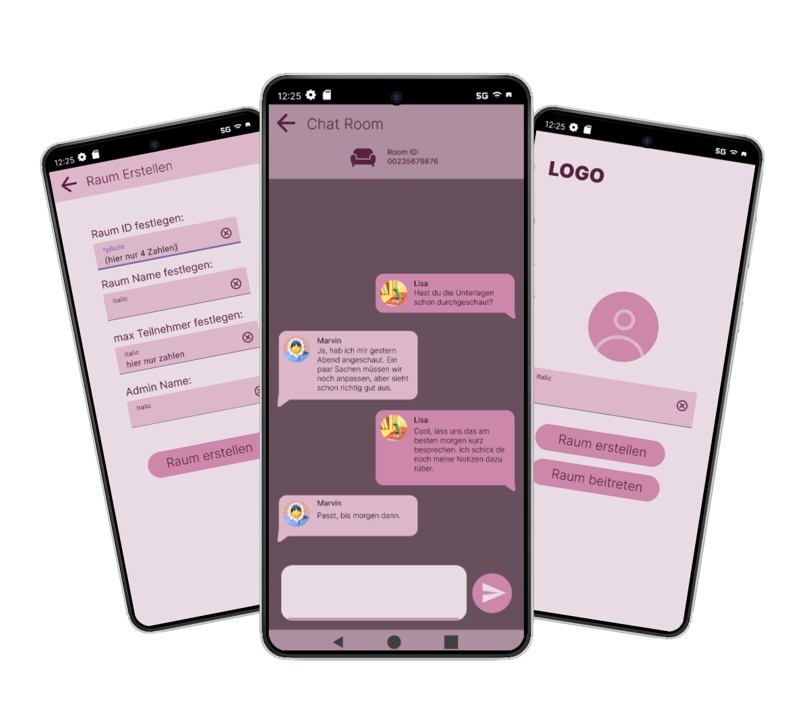
about me :)
Das wichtigste steht eig schon oben, aber hier noch ein paar Sachen zu mir:
- Ich bin eher introvertiert
- Ich hab eig gedacht, ich lande später eher im Filmbereich, dass mir UI/UX und Webdesign so viel Spaß machen, war überraschend
- In meiner Freizeit mach ich gerne Videoedits und arbeite mit After Effects
- Dieses Portfolio ist sehr kurzfristig entstanden, eigentlich wollte ich die Semesterferien nutzen, um ein neues Portfolio mit neuen Inhalten aufzubauen
Ich freu mich, falls mein Portfolio dich überzeugen konnte, und noch mehr über positive Rückmeldung, gerne per Mail: sarahsimon2501@gmail.com